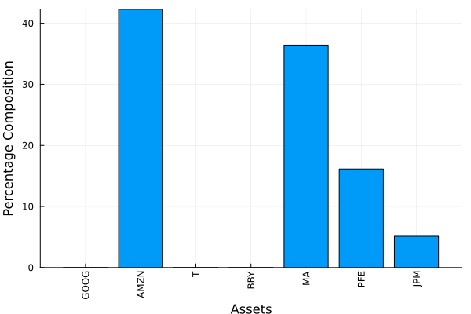
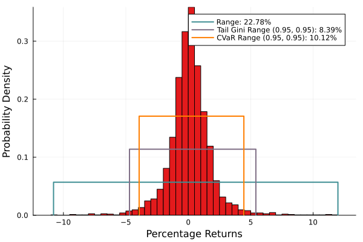
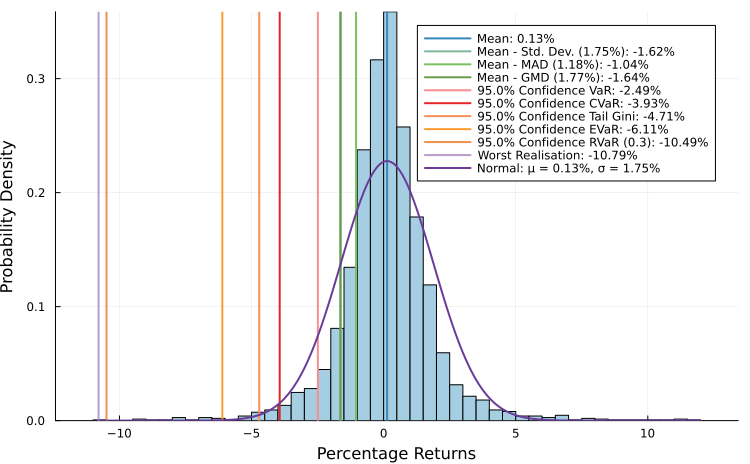
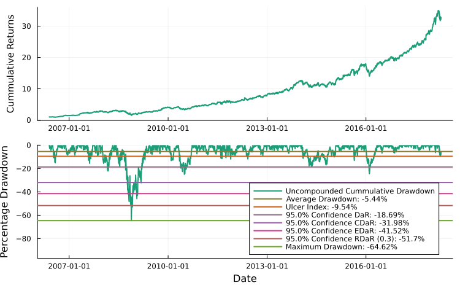
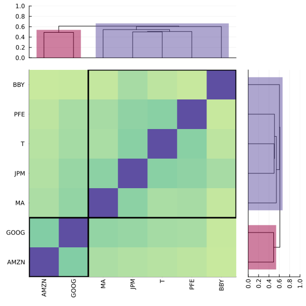
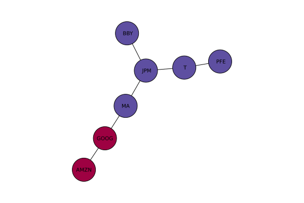
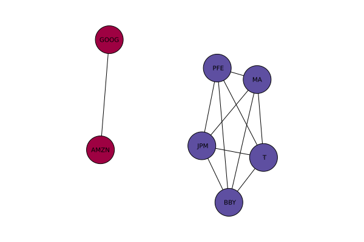

The source files for all examples can be found in /examples.
Not Financial Advice
This is not financial advice, this is merely how I use the library for my own purposes. I typically use thousands of assets and whittle them down using something akin to this. I'm also using severely outdated pricing information and a meme stock for these examples. Use your own data and do your own research.
using PortfolioOptimiser, Clarabel, CSV, CovarianceEstimation, DataFrames, GLPK, JuMP,
OrderedCollections, Pajarito, Statistics, StatsBase, TimeSeriesThe test data only contains a few stocks for convenience.
prices = TimeArray(CSV.File(joinpath(@__DIR__, "stock_prices.csv")); timestamp = :date);I like to use Clarabel.jl as a conic solver since it's quite fast and supports a wide variety of cones. For MIP constraints, Pajarito.jl with GLPK.jl and Clarabel.jl has been my go-to.
solvers = OrderedDict(:Clarabel => Dict(:solver => Clarabel.Optimizer,
:params => Dict("verbose" => false,
"max_step_fraction" => 0.7)),
:PClGL => Dict(:solver => optimizer_with_attributes(Pajarito.Optimizer,
MOI.Silent() => true,
"oa_solver" => optimizer_with_attributes(GLPK.Optimizer,
MOI.Silent() => true),
"conic_solver" => optimizer_with_attributes(Clarabel.Optimizer,
"verbose" => false,
"max_step_fraction" => 0.7))));The allocation solver takes care of the discrete asset allocation at the end. There's also a greedy algorithm, that won't necessarily give the global optimum but can be a good fallback if any of the MIP optimisers fail.
alloc_solvers = Dict(:GLPK => Dict(:solver => GLPK.Optimizer,
:params => Dict(MOI.Silent() => true)));Maximum Number of Assets Approach
This approach constrains the maximum number of assets in the portfolio to reduce the diversification.
First we create the portfolio instance.
portfolio = Portfolio(; prices = prices, solvers = solvers, alloc_solvers = alloc_solvers);I often have too many assets to start with (a few hundreds to thoudands), so I filter them first just to keep the best ones. There are multiple ways of doing this, the first is to use the maximum number of assets constraint. This may not be suitable when the number of assets is too large, and I haven't tried it with thousands of assets yet.
I like to minimise my drawdown risk so I like to minimise the relativistic drawdown at risk (:RDaR) with default parameters. Say we want to use only the top x% least risky assets. Since we only have 20 assets, we'll make this the top 25%. We can do this by setting the maximum number of assets to equal the number of assets divided by two.
portfolio.num_assets_u = div(length(portfolio.assets), 4);Because this is a drawdown risk measure, and we're minimising the risk, we don't need to compute any statistics. We can optimise directly.
w = optimise!(portfolio, OptimiseOpt(; rm = :RDaR, obj = :Min_Risk))| Row | tickers | weights |
|---|---|---|
| String | Float64 | |
| 1 | GOOG | 0.0479937 |
| 2 | AAPL | 0.0 |
| 3 | FB | 0.0 |
| 4 | BABA | 0.0 |
| 5 | AMZN | 0.0341207 |
| 6 | GE | 0.0 |
| 7 | AMD | 0.0 |
| 8 | WMT | 0.0 |
| 9 | BAC | 0.0 |
| 10 | GM | 0.0 |
| 11 | T | 0.505531 |
| 12 | UAA | 0.0 |
| 13 | SHLD | 0.0 |
| 14 | XOM | 0.0 |
| 15 | RRC | 0.0 |
| 16 | BBY | 0.141236 |
| 17 | MA | 0.271119 |
| 18 | PFE | 0.0 |
| 19 | JPM | 0.0 |
| 20 | SBUX | 0.0 |
We'll save the significant tickers for later.
idx = w.weights .>= 1e-6;
tickers_1 = Symbol.(w.tickers[idx])5-element Vector{Symbol}:
:GOOG
:AMZN
:T
:BBY
:MAHierarchical Clustering to Filter Assets
The approach I've used is to filter assets by putting them through hierarchical clustering optimisations with different downside risk measures. First we generate our hierarchical portfolio instance and an instance of our correlation/distnace matrix options.
hcportfolio = HCPortfolio(; prices = prices, solvers = solvers,
alloc_solvers = alloc_solvers);The Gerber 2 statistic is quite a robust covariance matrix, which is turned into a correlation and distance matrices within the asset_statistics! function.
cor_opt = CorOpt(; method = :Gerber2);
cluster_opt = ClusterOpt(; linkage = :ward);Now lets define a function that leaves us with x% after removing the bottom q'th quantile n times. In other words, $x = (1-q)^n \to q = 1 - \exp\left(\dfrac{1}{n}\log x\right)$.
gen_q(x, n) = 1 - exp(log(x) / n);Why do we need this? Well, because we'll filter the stocks using a few risk measures. We can define a function to do so.
function get_best_tickers(tickers, x, rms, cor_opt, cluster_opt)
new_tickers = tickers
q = gen_q(x, length(rms))
for rm ∈ rms
hp = HCPortfolio(; prices = prices[Symbol.(new_tickers)], solvers = solvers)
asset_statistics!(hp; calc_mu = false, calc_cov = false, calc_kurt = false,
calc_skew = false, cor_opt = cor_opt)
w = optimise!(hp; type = :HERC, rm = rm, cluster_opt = cluster_opt).weights
qidx = w .>= quantile(w, q)
new_tickers = new_tickers[qidx]
end
return Symbol.(new_tickers)
end;I like to use downside and drawdown risk measures, but for our example we'll only use drawdown risk measures.
tickers_2 = get_best_tickers(hcportfolio.assets, 0.25, [:DaR, :CDaR, :EDaR, :RDaR], cor_opt,
cluster_opt)5-element Vector{Symbol}:
:GOOG
:T
:MA
:PFE
:JPMtickers_2 contains the filtered tickers.
Observant readers may have figured out that we can take a similar approach with the traditional portfolio without the need for constraining the maximum number of assets, it's just much more computationally intensive. One could also use a single step and simply take the top q'th percentile. We're only showing two ways of doing it, there is more than one right answer.
Optimising and Allocating our Reduced Portfolio
Now we can do a couple of things, we can use tickers_1 and/or tickers_2 in different ways. We can use the union or the intersect. We'll use the union for this example.
tickers = union(tickers_1, tickers_2)7-element Vector{Symbol}:
:GOOG
:AMZN
:T
:BBY
:MA
:PFE
:JPMWe'll use both a traditional portfolio and hierarchical one.
portfolio = Portfolio(; prices = prices[tickers], solvers = solvers,
alloc_solvers = alloc_solvers);
hcportfolio = HCPortfolio(; prices = prices[tickers], solvers = solvers,
alloc_solvers = alloc_solvers);In order for the clustering to work, we need to compute the correlation and distance matrices, so we need to call asset_statistics!. We'll use the robust correlation method that we defined earlier. We'll be using kelly returns and drawdown risk measures so we won't need anything else for either portfolio.
asset_statistics!(hcportfolio; calc_mu = false, calc_cov = false, calc_kurt = false,
calc_skew = false, cor_opt = cor_opt);Since we filtered the assets by minimising the risk measure, we can be more comfortable in using a different objective function. As such we'll maximise the risk-return (Sharpe) ratio using exact kelly returns, which have to be computed in accordance to the asset weights that are being optimised, which is why we didn't need to compute the mean return vector.
opt = OptimiseOpt(; rm = :RDaR, obj = :Sharpe, kelly = :Exact);Perform the traditional optimisation,
w1 = optimise!(portfolio, opt)| Row | tickers | weights |
|---|---|---|
| String | Float64 | |
| 1 | GOOG | 1.2229e-5 |
| 2 | AMZN | 0.423165 |
| 3 | T | 2.3666e-5 |
| 4 | BBY | 7.24333e-6 |
| 5 | MA | 0.327602 |
| 6 | PFE | 0.220415 |
| 7 | JPM | 0.0287743 |
and a nested cluster optimisation (:NCO). This takes the cluster structure and treats each cluster as its own portfolio and performs a traditional optimisation on each one. The weights get put into an N×k matrix where each column represents one of k clusters, and each row one of N assets. All columns are disjointed sets with zero values for assets that do not belong in a given cluster. This matrix is then used to compute the statistics for each cluster via linear algebra. Simply put, each cluster is turned into a synthetic asset. We then create a portfolio made up of said synthetic assets and optimise it with a traditional optimisation, yielding a k×1 vector column vector of weights for each cluster. Once this is done, the aforementioned matrix can be multiplied by this vector to recover the vector of weights for each asset. This way, we take the best of both worlds and have an optimised portfolio that takes advantage of the relational structure of the assets.
Since we're performing various sub optimisations, we want to pass on our optimisation options into them, we do this with the nco_opt keyword.
w2 = optimise!(hcportfolio; type = :NCO, nco_opt = opt, cluster_opt = cluster_opt)| Row | tickers | weights |
|---|---|---|
| String | Float64 | |
| 1 | GOOG | 5.25488e-8 |
| 2 | AMZN | 0.422716 |
| 3 | T | 2.13087e-5 |
| 4 | BBY | 1.01397e-5 |
| 5 | MA | 0.400706 |
| 6 | PFE | 0.102999 |
| 7 | JPM | 0.0735472 |
Both portfolios are fairly similar, but that's mostly because we have very few assets. The hierarchical approach shields the investor from highly correlated assets. I tend to prefer it even if its flashy statistics are always less flashy. I like an uncorrelated yet performant portfolio. This seems to be a good way of having your cake and eating it too.
Discrete Allocation of Assets
Again we have a few things we can do here, we can either allocate each portfolio individually, or we can combine them in some way. We'll combine them into a single portfolio using the risk return ratio for :RDaR. For this need to compute the mean returns vector. The type of the mean return doesn't matter because we'll be using the same for both, and we'll be using a ratio to compute the linear combination coefficients.
asset_statistics!(portfolio; calc_mu = true, calc_cov = false, calc_kurt = false,
calc_skew = false)
asset_statistics!(hcportfolio; calc_mu = true, calc_cov = false, calc_kurt = false,
calc_skew = false, calc_cor = false);We don't need to provide the portfolio type since it defaults to :Trad for Portfolio variables.
sr1 = sharpe_ratio(portfolio; rm = :RDaR)0.002560461522163454We need to set type = :NCO because the function defaults to :HRP for HCPortfolio variables.
sr2 = sharpe_ratio(hcportfolio; type = :NCO, rm = :RDaR)0.002538951134065497The value of an NCO portfolio's objective function will never be as good as that of a traditional portfolio (higher min risk, lower utility, lower sharpe ratio, lower max return), but there is also less overfitting thanks to the hierarchical clustering, especially if using a robust correlation matrix. Which is why I tend to prefer them over the traditional approach. For the example, I will assign it the larger coefficient (alpha) for our linear combination.
alpha = sr1 / (sr1 + sr2);
beta = 1 - alpha;Now we can take these values and use them to make a linear combination of the weights and renormalise (the renormalisation isn't needed but I do it anyway because floating point arithmetic can be weird).
weights3 = beta * w1.weights + alpha * w2.weights;
weights3 ./= sum(weights3);We can create a dataframe and assign it to one of the portfolios, it doesn't matter which.
portfolio.optimal[:Combo] = DataFrame(; tickers = w1.tickers, weights = weights3)| Row | tickers | weights |
|---|---|---|
| String | Float64 | |
| 1 | GOOG | 6.11508e-6 |
| 2 | AMZN | 0.42294 |
| 3 | T | 2.24823e-5 |
| 4 | BBY | 8.6976e-6 |
| 5 | MA | 0.364308 |
| 6 | PFE | 0.16146 |
| 7 | JPM | 0.0512552 |
Finally, we can discretely allocate the combined portfolio. We have to provide the port_type argument because for Portfolio it defaults to :Trad and for HCPortfolio to :HRP. We have to tell the function to take the assets and weights from the optimal[:Combo] field of the portfolio. We also need to tell the function how much money we can/want to invest, the default is 10,000. Say we only have 2674 dollars.
The value of investment is not a currency, it's a number, so you have to ensure the currency of the prices and investment match.
alloc_opt = AllocOpt(; port_type = :Combo, investment = 2674)
w4 = allocate!(portfolio, alloc_opt)| Row | tickers | shares | price | cost | weights |
|---|---|---|---|---|---|
| String | Float64 | Float64 | Float64 | Float64 | |
| 1 | GOOG | 0.0 | 1019.97 | 0.0 | 0.0 |
| 2 | AMZN | 1.0 | 1427.05 | 1427.05 | 0.537174 |
| 3 | T | 0.0 | 35.25 | 0.0 | 0.0 |
| 4 | BBY | 0.0 | 70.91 | 0.0 | 0.0 |
| 5 | MA | 4.0 | 172.36 | 689.44 | 0.259521 |
| 6 | PFE | 12.0 | 35.79 | 429.48 | 0.161666 |
| 7 | JPM | 1.0 | 110.62 | 110.62 | 0.0416398 |
This gives the portfolio that we can afford that minimises the difference between its weights and the ideal weights. By default, it assumes the asset price to be the last row of prices. Alternatively, you can provide the keyword argument asset_prices, which takes a vector of prices where the i'th entry is the price of the i'th asset.
Plots of Allocated Portfolio
There are a number of plots we can create from an optimised portfolio. For example we can plot the composition as a bar chart.
fig1 = plot_bar(portfolio, :Combo)
We can also plot various expected ranges of returns of this portfolio.
fig2 = plot_range(portfolio; type = :Combo)
We can view downside risk measures as well.
fig3 = plot_hist(portfolio; type = :Combo)
Cumulative uncompounded drawdowns too.
fig4 = plot_drawdown(portfolio; type = :Combo)
The asset clusters.
fig5 = plot_clusters(portfolio; cluster_opt = cluster_opt)
We can also visualise the asset network.
fig6 = plot_network(portfolio; type = :Combo, cluster_opt = cluster_opt,
kwargs = (; method = :stress, curves = false))
And the cluster network.
fig7 = plot_cluster_network(portfolio; type = :Combo, cluster_opt = cluster_opt,
kwargs = (; method = :stress, curves = false))
Conclusion
Hopefully this gives a good starting overview on how you can use the library to make reasonable, justifiable, and robust investment choices... ahh who are we kidding, we're all YOLOing 0 DTE TSLA options 🚀🌔🙌💎🦍.
This page was generated using Literate.jl.